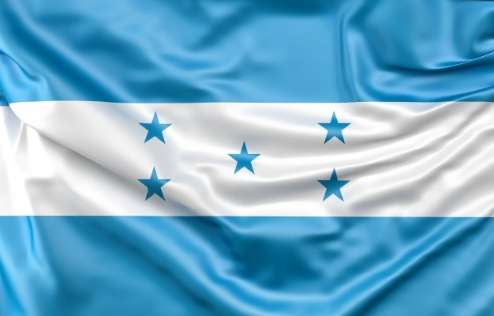
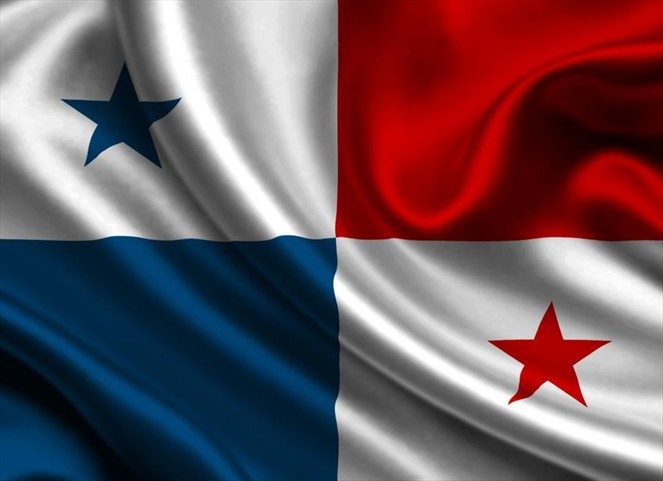

El Salvador
El Salvador, oficialmente República de El Salvador, es un
país soberano de América Central ubicado en el litoral del océano
Pacífico con una extensión territorial de 21 041 km2. En
el año 2015 contaba con una población estimada en 6 377 195
habitantes, siendo el país más densamente poblado del continente
americano.

Guatemala
Guatemala —oficialmente, República de Guatemala— es un
Estado soberano situado en América Central, en su extremo
noroccidental, con una amplia cultura autóctona producto de la
herencia maya y la influencia castellana durante la época
colonial.

Honduras
Honduras es un país de América, ubicado en el centro-norte
de América Central. Su nombre oficial es República de Honduras y su
capital es el Distrito Central, formado por las ciudades de
Tegucigalpa y Comayagüela

Nicaragua
Nicaragua es un país ubicado en el istmo centroamericano
que limita con Honduras, al norte, y con Costa Rica, al sur. Posee
costas en el océano Pacífico y el mar Caribe, y en cuanto a límites
marítimos en el océano Pacífico colinda con El Salvador, Honduras y
Costa Rica; mientras que en el mar Caribe colinda con Honduras,
Colombia y Costa Rica.

Panama
Panamá es un país ubicado en el extremo sureste de América
Central. Su nombre oficial es República de Panamá y su capital es
la ciudad de Panamá. Limita al Norte con el mar Caribe, al Sur con
el océano Pacífico, al Este con Colombia y al Oeste con Costa Rica.